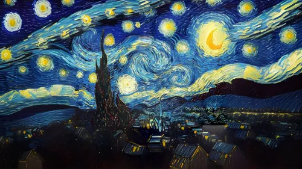

The Starry Night
Created: 1889
Van Gogh painted The Starry Night from memory, looking out the window of the asylum where he'd voluntarily committed himself after a mental health crisis. The swirling sky wasn't just artistic license. Some astronomers believe it reflects real atmospheric turbulence Van Gogh may have perceived, and physicists have noted the painting's turbulent patterns closely follow mathematical models of real fluid turbulence. He considered it one of his failures and rarely mentioned it in letters to his brother, yet today it's one of the most recognized paintings on Earth.
Type: Post‑Impressionist Oil Painting